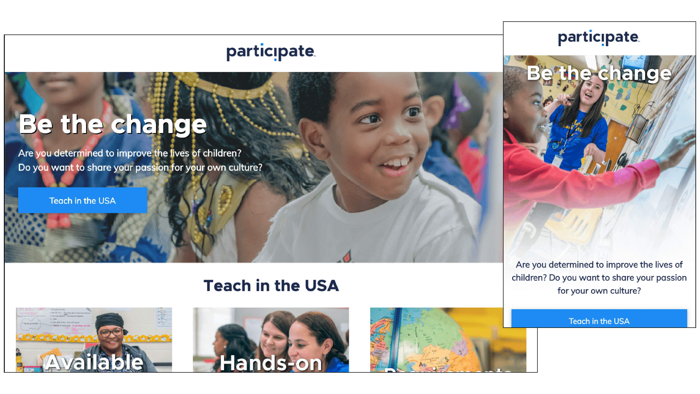

Program landing page
HTML5, CSS, JavaScript, Responsive design
I built a stand-alone webpage to serve as an intermediate for the company’s exchange teacher program as it transitioned its brand and assets during a company rebrand.
The company's old website was no longer on-brand, and a new Wordpress theme was still under construction by a third party contractor. I was given a one-week timetable to design, build and test a webpage for the program while the new site was being set up.
Design and function
The goal of the landing page was to provide needed details to educators interested in applying to teach with the program. I began with sketches and layout, bringing together a wireframe that was more modern and vector-driven than designs in the previous brand.


Development
I knew that writing my own styles from scratch would take more time than I had. I tapped into W3.CSS and Bootstrap to set up a ready-to-use framework of responsive styles built with a focus on mobile displays, a key consideration for our audience. This gave me the tools I needed to flesh out a skeleton in HTML and set up responsive design for all of the content in the mockup I designed.
Bells and whistles
With my remaining time, I added jQuery to my anchors across the page to allow the page to scroll smoothly up or down, since the sub menu linked to sections throughout the page. I finished with hover states for the CTA buttons to give the page some basic interactivity.
Results
The landing page served as an intermediate website until our new Wordpress instance was ready for build out. The webpage got more than 541,919 page views during this time.
